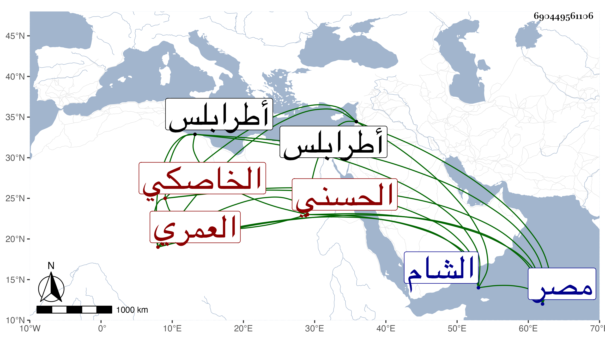

0902Sakhawi.DawLamic.ITO20230111-ara1.EIS1600.690449561106
Biography ID: 690449561106
684
أحمد بن يلبغا شهاب الدين العمري الخاصكي الحسني صاحب الكيس وأستاذ الظاهر برقوق . كان معظما في الدولة أحد المقدمين بمصر في أيامه ثم أمير مجلس ثم نفاه إلى الشام وأقام بطالا في طرابلس وآل أمره إلى أن ذبح مع أيتمش في رابع شعبان سنة اثنتين وقد زاد على الأربعين وقارب السبعين . أغفله شيخنا في أنبائه .
